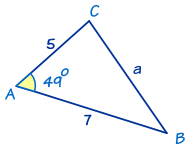
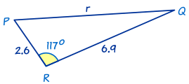

Solving SAS Triangles
"SAS" means "Side, Angle, Side"
 |
"SAS" is when we know two sides and the angle between them. |
To solve an SAS triangle
- use The Law of Cosines to calculate the unknown side,
- then use The Law of Sines to find the smaller of the other two angles,
- and then use the three angles add to 180° to find the last angle
Example 1

In this triangle we know:
- angle A = 49°
- side b = 5, and
- side c = 7
To solve the triangle we need to find side a and angles B and C.
Use The Law of Cosines to find side a first:
a2 = b2 + c2 − 2bc cosA
Now we use the Law of Sines to find the smaller of the other two angles.
Choose angle B:
sin Bb = sin Aa
Now we find angle C, which is easy using 'angles of a triangle add to 180°':
Now we have completely solved the triangle ... we have found all its angles and sides.
Example 2

This is also an SAS triangle.
First let's find r using The Law of Cosines:
r2 = p2 + q2 − 2pq cos R
Now for The Law of Sines.
Choose the smaller angle? We don't have to! Angle R is greater than 90°, so angles P and Q must be less than 90°.
sin Pp = sin Rr
Now we will find angle Q using 'angles of a triangle add to 180°':
All Done!
Mastering this skill needs lots of practice, so try these questions: